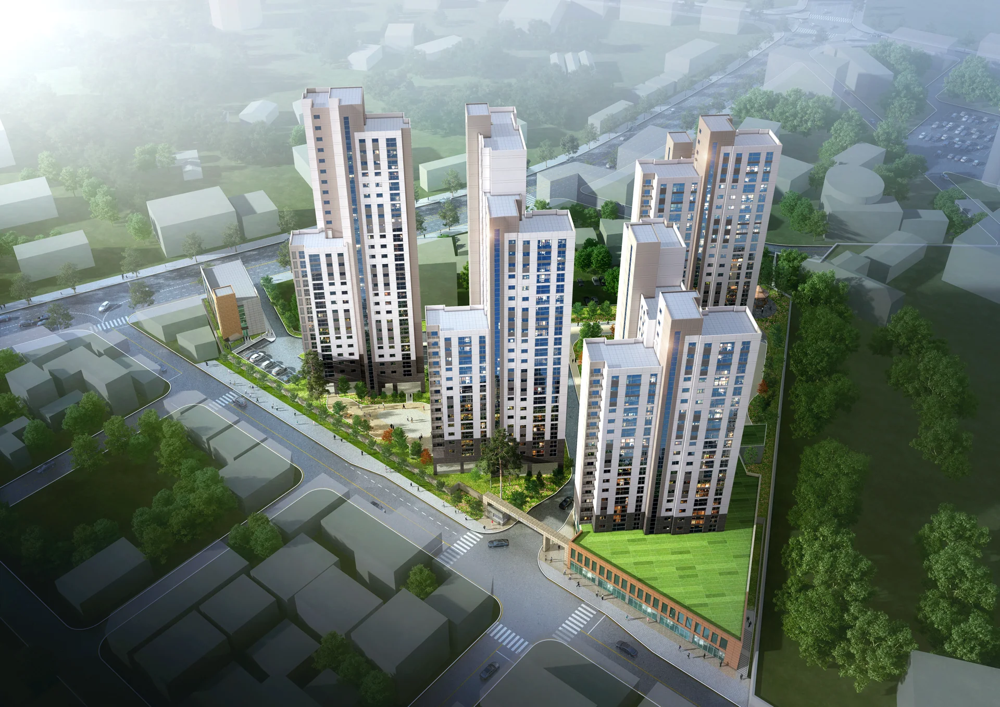

본문 바로가기
율.
율그룹건축사사무소
YUL GROUP ARCHITECTS
메뉴
＋
홈
사무소
프로젝트
기록
연락처

확대 보기 ＋
익산 신동 청솔아파트 조감도
← 프로젝트 목록
PROJECT / 09
공동주택
익산 신동 청솔아파트
관심 프로젝트 저장 ＋
인쇄 / PDF 저장 ↗
분야
공동주택
위치
전북 익산
조감도는 계획을 표현한 이미지로, 실제 시공 결과와 다를 수 있습니다.
← 이전 프로젝트
오성대우아파트 주택재건축 정비사업
다음 프로젝트 →
효자구역 주택재개발
↑
←
→
닫기 ×